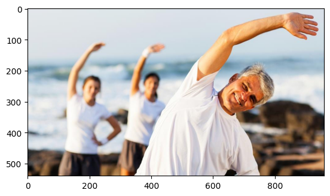
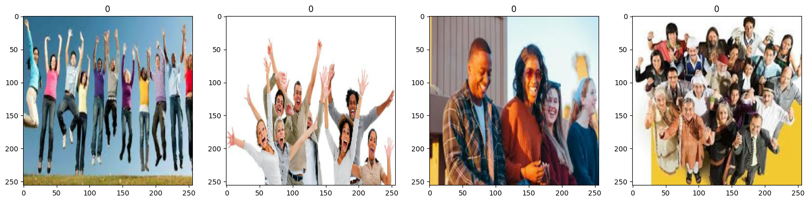
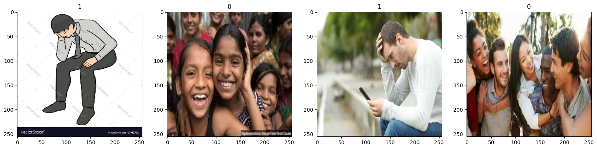
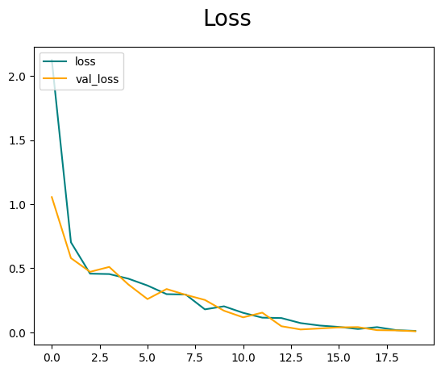
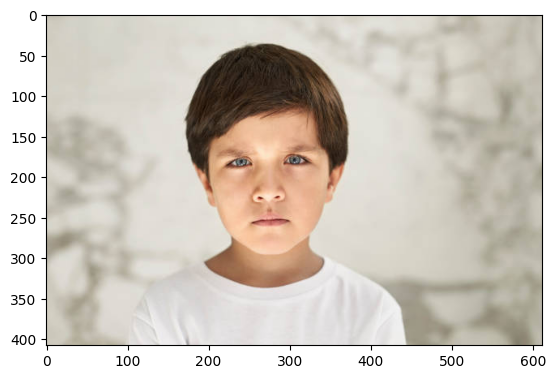

graph LR A[Input Layer] --> B[Convolutional Layer 1] B --> C[MaxPooling Layer 1] C --> D[Convolutional Layer 2] D --> E[MaxPooling Layer 2] E --> F[Convolutional Layer 3] F --> G[MaxPooling Layer 3] G --> H[Flatten Layer] H --> I[Dense Layer 1] I --> J[Output Layer] style A fill:#f9f,stroke:#333,stroke-width:2px style B fill:#f9f,stroke:#333,stroke-width:2px style C fill:#f9f,stroke:#333,stroke-width:2px style D fill:#f9f,stroke:#333,stroke-width:2px style E fill:#f9f,stroke:#333,stroke-width:2px style F fill:#f9f,stroke:#333,stroke-width:2px style G fill:#f9f,stroke:#333,stroke-width:2px style H fill:#f9f,stroke:#333,stroke-width:2px style I fill:#f9f,stroke:#333,stroke-width:2px style J fill:#f9f,stroke:#333,stroke-width:2px
Image Classification - Happy or Sad
This notebook demonstrates the process of building and training a Convolutional Neural Network (CNN) model to classify images as “happy” or “sad.” We will use TensorFlow and Keras for model creation and training.
Data Preprocessing
In this section, we load and preprocess the dataset of images representing happy and sad emotions. We remove any images with unsupported file extensions and scale the pixel values to be between 0 and 1 for efficient training.
Preprocessing Code
# Preprocessing Code
#%pip install tensorflow opencv-python matplotlib
import tensorflow as tf
import os
# ...os.path.join("data","happy")'data/happy'Check if a GPU is available
gpus = tf.config.experimental.list_physical_devices('GPU')
len(gpus)0Avoid OOM Errors By Setting GPU Memory Consumption Growth
# Avoid OOM Errors By Setting GPU Memory Consumption Growth
gpus = tf.config.experimental.list_physical_devices('GPU')
for gpu in gpus:
tf.config.experimental.set_memory_growth(gpu, True)Remove dodgy images
import cv2
import imghdr
import matplotlib.pyplot as plt/var/folders/v8/l1n5gfyn3zj_f5m_0z4bv2m80000gn/T/ipykernel_4077/2011824555.py:2: DeprecationWarning: 'imghdr' is deprecated and slated for removal in Python 3.13
import imghdrdata_dir = "data"os.listdir(os.path.join(data_dir,"happy"))['images26.jpg',
'images241.jpg',
'images32.jpg',
'89ca5d41335b4f9207b9cf03538a7dbd63497e474912837562cb9f58809ac32f._RI_TTW_.png',
'05-12-21-happy-people.jpg',
'110754-utyeqqosky-1547658396.jpeg',
'image22.jpeg',
'Happy.jpg',
'images137.jpg',
'Overtly-Cheerful-Primer-Editorials-min.png',
'how-happy-are-healthy-people.jpg',
'170404-happy-workers-feature.jpg',
'images27.jpg',
'friends-happy-190821.jpg',
'images242.jpg',
'goup-happy-people-group-jumping-isolated-white-background-35582232.jpg',
'images134.jpg',
'images120.jpg',
'GettyImages-454356720.jpg',
'WorldHappinessReport_620.jpg',
'_86a43964-aa8e-11e8-82d1-388e3d6e11aa.jpg',
'images243.jpg',
'images30.jpg',
'png-transparent-graphy-happy-people-love-child-photography-thumbnail.png',
'young-and-happy-people-vector-15114154.jpg',
'images247.jpg',
'file-20230208-27-3jttof.jpg',
'images125.jpg',
'friends_190412.jpg',
'images21.jpg',
'images246.jpg',
'happy-people-jump-with-raised-arms-characters-win_107791-14884.jpg',
'images250.jpg',
'images23.jpg',
'happy-peaceful.jpg',
'images132.jpg',
'MV5BMTM3ODM0NTQ1MF5BMl5BanBnXkFtZTcwMzAxMTM5OA._V1_FMjpg_UX1000_.jpg',
'gdfVVm_MyCRtqpvdkt8vtSB1n_oz_CpwCq6vNMpj0S8.jpg',
'images245.jpg',
'images236.jpg',
'images79.jpg',
'images183.jpg',
'images197.jpg',
'happiness.jpg',
'images6.jpg',
'maxresdefault.jpg',
'shiny-happy-people.jpg',
'images7.jpg',
'images196.jpg',
'images182.jpg',
'20150413185238-secrets-happy-entrepreneurs-woman-gratitude-rainbow-.jpeg',
'images78.jpg',
'images50.jpg',
'happy-person.jpeg',
'images87.jpg',
'images91.jpg',
'images85.jpg',
'images235.jpg',
'image24.jpeg',
'group-portrait-happy-people-disabilities-49330313.jpg',
'images156.jpg',
'GettyImages-871518740.jpg',
'images195.jpg',
'nm-how-happiness-affects-health-tnail.jpg',
'images208.jpg',
'images47.jpg',
'images53.jpg',
'images220.jpg',
'images84.jpg',
'group-young-happy-people-with-their-hands-up_369728-62.jpg',
'images218.jpg',
'images57.jpg',
'images43.jpg',
'1HEoLBLidT2u4mhJ0oiDgig.png',
'images191.jpg',
'images146.jpg',
'where-to-watch-shiny-happy-people.jpg',
'happy-woman-in-nature-at-sunset.jpg',
'image25.jpeg',
'9b65a25adca61c48bcb01370116723e3--happy-people-brings.jpg',
'_happy_jumping_on_beach-40815.jpg',
'i00YzYyLTkxY2ItY2I3OWE3NDBmNDVmXkEyXkFqcGdeQXVyMjkwOTAyMDU._V1_FMjpg_UX1000_.jpg',
'VJdvLa-download-happy-blackman-png.png',
'Duggar-Family-Secrets-Are-Exposed-in-New-Docuseries-Featuring-Jill-and-Amy-featured.png',
'613k1XcpYCL.jpg',
'images42.jpg',
'images81.jpg',
'images95.jpg',
'56f455011e0000b300705475.jpeg',
'images83.jpg',
'hand-drawn-happy-friends-jumping_23-2149095224.jpg',
'images179.jpg',
'images150.jpg',
'A_Sep20_14_1189155141.jpg',
'ipsos-global-advisor-happiness-2022-opti.jpg',
'images193.jpg',
'images55.jpg',
'images232.jpg',
'happy-indians_5f66fd46d9f5b.jpg',
'images70.jpg',
'Happy-people-800x533.jpg',
'Screen-Shot-2012-10-23-at-12.57.22-PM.png',
'images161.jpg',
'images149.jpg',
'images148.jpg',
'images160.jpg',
'Screaming-Happy-Woman-THe-Trent.jpg',
'images71.jpg',
'343515-worldhappinessreport1440.jpg',
'happiness_thumbnail.jpg',
'images200.jpg',
'images214.jpg',
'images189.jpg',
'images176.jpg',
'happy-people.jpg',
'image30.jpeg',
'images66.jpg',
'Successful-year.jpg',
'images211.jpg',
'7VR73K6EP5ETVEOUFANWBUYJEQ.jpg',
'physed-happiness-superJumbo.jpg',
'images9.jpg',
'988689_Wallpaper2.jpg',
'happy-people2.jpg',
'35438_hd.jpg',
'images199.jpg',
'Happy-People-PNG.png',
'happy-people-vector-839522.jpg',
'images63.jpg',
'images210.jpg',
'images77.jpg',
'images204.jpg',
'images238.jpg',
'Dollarphotoclub_76084977-1.jpg',
'images49.jpg',
'images206.jpg',
'jumping-and-dancing-happy-people-positive-emotions-set-illustration-free-vector.jpg',
'habits-of-happy-people.jpg',
'1_617fd1e2590c2.jpg',
'dv2051009.jpg',
'happy-woman.jpg',
'377dac1b50ef865c920abb84d9d3857d173750b14306061e9aa5b4a1ec0dcdfa-rimg-w1196-h796-gmir.jpg',
'smile.woman_.jpg',
'images159.jpg',
'images74.jpg',
'images13.jpg',
'Happy-Guy.jpg',
'getty_152414899_97046097045006_68075.jpg',
'images102.jpg',
'images117.jpg',
'106827976-1611251261868-twenty20_33fd1f3f-9221-4c64-bcb1-bfeec3022d9b.jpg',
'images249.jpg',
'images12.jpg',
'image16.jpeg',
'images10.jpg',
'what-makes-people-happy1.jpg',
'getty_505175324_2000131020009280246_158016.jpg',
'group-of-happy-people-2.jpg',
'happy-people_1463241208.jpg',
'images128.jpg',
'images114.jpg',
'getty_478389113_970647970450091_99776.jpg',
'images11.jpg',
'images29.jpg',
'happy-people-in-the-poppy-field-1280x800-wide-wallpapers-net.jpg',
'images15.jpg',
'riskshappypeopletakeh_1384254283.jpg',
'835405.jpg',
'images110.jpg',
'hdptcar-fi-2.jpg',
'images105.jpg',
'images139.jpg',
'happy-woman-headphones-pink-african-american-1296x728-header.jpg',
'web3-happy-people-outside-smile-sun-nature-eduardo-dutra-620857-unsplash.jpg',
'hand-drawn-happy-people-jumping_23-2149092878.jpg',
'images14.jpg',
'goup-happy-people-35582464.jpg',
'compassion-900x387.jpg',
'images107.jpg',
'happypeople-1024x679.jpg',
'images106.jpg',
'images17.jpg',
'png-clipart-happiness-graphy-smile-happy-people-love-photography.png']image_exts = ["jpg", "jpeg", "png", "bmp"]image_exts[0]'jpg'for image_class in os.listdir(data_dir):
for image in os.listdir(os.path.join(data_dir, image_class)):
print(image)images26.jpg
images241.jpg
images32.jpg
89ca5d41335b4f9207b9cf03538a7dbd63497e474912837562cb9f58809ac32f._RI_TTW_.png
05-12-21-happy-people.jpg
110754-utyeqqosky-1547658396.jpeg
image22.jpeg
Happy.jpg
images137.jpg
Overtly-Cheerful-Primer-Editorials-min.png
how-happy-are-healthy-people.jpg
170404-happy-workers-feature.jpg
images27.jpg
friends-happy-190821.jpg
images242.jpg
goup-happy-people-group-jumping-isolated-white-background-35582232.jpg
images134.jpg
images120.jpg
GettyImages-454356720.jpg
WorldHappinessReport_620.jpg
_86a43964-aa8e-11e8-82d1-388e3d6e11aa.jpg
images243.jpg
images30.jpg
png-transparent-graphy-happy-people-love-child-photography-thumbnail.png
young-and-happy-people-vector-15114154.jpg
images247.jpg
file-20230208-27-3jttof.jpg
images125.jpg
friends_190412.jpg
images21.jpg
images246.jpg
happy-people-jump-with-raised-arms-characters-win_107791-14884.jpg
images250.jpg
images23.jpg
happy-peaceful.jpg
images132.jpg
MV5BMTM3ODM0NTQ1MF5BMl5BanBnXkFtZTcwMzAxMTM5OA._V1_FMjpg_UX1000_.jpg
gdfVVm_MyCRtqpvdkt8vtSB1n_oz_CpwCq6vNMpj0S8.jpg
images245.jpg
images236.jpg
images79.jpg
images183.jpg
images197.jpg
happiness.jpg
images6.jpg
maxresdefault.jpg
shiny-happy-people.jpg
images7.jpg
images196.jpg
images182.jpg
20150413185238-secrets-happy-entrepreneurs-woman-gratitude-rainbow-.jpeg
images78.jpg
images50.jpg
happy-person.jpeg
images87.jpg
images91.jpg
images85.jpg
images235.jpg
image24.jpeg
group-portrait-happy-people-disabilities-49330313.jpg
images156.jpg
GettyImages-871518740.jpg
images195.jpg
nm-how-happiness-affects-health-tnail.jpg
images208.jpg
images47.jpg
images53.jpg
images220.jpg
images84.jpg
group-young-happy-people-with-their-hands-up_369728-62.jpg
images218.jpg
images57.jpg
images43.jpg
1HEoLBLidT2u4mhJ0oiDgig.png
images191.jpg
images146.jpg
where-to-watch-shiny-happy-people.jpg
happy-woman-in-nature-at-sunset.jpg
image25.jpeg
9b65a25adca61c48bcb01370116723e3--happy-people-brings.jpg
_happy_jumping_on_beach-40815.jpg
i00YzYyLTkxY2ItY2I3OWE3NDBmNDVmXkEyXkFqcGdeQXVyMjkwOTAyMDU._V1_FMjpg_UX1000_.jpg
VJdvLa-download-happy-blackman-png.png
Duggar-Family-Secrets-Are-Exposed-in-New-Docuseries-Featuring-Jill-and-Amy-featured.png
613k1XcpYCL.jpg
images42.jpg
images81.jpg
images95.jpg
56f455011e0000b300705475.jpeg
images83.jpg
hand-drawn-happy-friends-jumping_23-2149095224.jpg
images179.jpg
images150.jpg
A_Sep20_14_1189155141.jpg
ipsos-global-advisor-happiness-2022-opti.jpg
images193.jpg
images55.jpg
images232.jpg
happy-indians_5f66fd46d9f5b.jpg
images70.jpg
Happy-people-800x533.jpg
Screen-Shot-2012-10-23-at-12.57.22-PM.png
images161.jpg
images149.jpg
images148.jpg
images160.jpg
Screaming-Happy-Woman-THe-Trent.jpg
images71.jpg
343515-worldhappinessreport1440.jpg
happiness_thumbnail.jpg
images200.jpg
images214.jpg
images189.jpg
images176.jpg
happy-people.jpg
image30.jpeg
images66.jpg
Successful-year.jpg
images211.jpg
7VR73K6EP5ETVEOUFANWBUYJEQ.jpg
physed-happiness-superJumbo.jpg
images9.jpg
988689_Wallpaper2.jpg
happy-people2.jpg
35438_hd.jpg
images199.jpg
Happy-People-PNG.png
happy-people-vector-839522.jpg
images63.jpg
images210.jpg
images77.jpg
images204.jpg
images238.jpg
Dollarphotoclub_76084977-1.jpg
images49.jpg
images206.jpg
jumping-and-dancing-happy-people-positive-emotions-set-illustration-free-vector.jpg
habits-of-happy-people.jpg
1_617fd1e2590c2.jpg
dv2051009.jpg
happy-woman.jpg
377dac1b50ef865c920abb84d9d3857d173750b14306061e9aa5b4a1ec0dcdfa-rimg-w1196-h796-gmir.jpg
smile.woman_.jpg
images159.jpg
images74.jpg
images13.jpg
Happy-Guy.jpg
getty_152414899_97046097045006_68075.jpg
images102.jpg
images117.jpg
106827976-1611251261868-twenty20_33fd1f3f-9221-4c64-bcb1-bfeec3022d9b.jpg
images249.jpg
images12.jpg
image16.jpeg
images10.jpg
what-makes-people-happy1.jpg
getty_505175324_2000131020009280246_158016.jpg
group-of-happy-people-2.jpg
happy-people_1463241208.jpg
images128.jpg
images114.jpg
getty_478389113_970647970450091_99776.jpg
images11.jpg
images29.jpg
happy-people-in-the-poppy-field-1280x800-wide-wallpapers-net.jpg
images15.jpg
riskshappypeopletakeh_1384254283.jpg
835405.jpg
images110.jpg
hdptcar-fi-2.jpg
images105.jpg
images139.jpg
happy-woman-headphones-pink-african-american-1296x728-header.jpg
web3-happy-people-outside-smile-sun-nature-eduardo-dutra-620857-unsplash.jpg
hand-drawn-happy-people-jumping_23-2149092878.jpg
images14.jpg
goup-happy-people-35582464.jpg
compassion-900x387.jpg
images107.jpg
happypeople-1024x679.jpg
images106.jpg
images17.jpg
png-clipart-happiness-graphy-smile-happy-people-love-photography.png
42-15542443.jpg
sad-person-concept-vector-26538685.jpg
png-transparent-woman-sad-folklore-ghost-horror-spirit-vendetta-vengeance-girl-person-thumbnail.png
sad-people-icon-2CCHXB2.jpg
2652760.jpg
dreamstime_s_101440985.jpg
aid12707023-v4-1200px-Make-a-Sad-Person-Happy-Step-10.jpg
man-portrait-contemplative-sad-looking-at-camera-732x549-thumbnail.jpg
iStock_000001932580XSmall.jpg
pexels-photo-4584665.jpeg
n-rendering-frustrated-upset-man-sitting-white-people-man-character-53250684.jpg
image-asset.jpeg
sadness-person-depression-clip-art-bored-cliparts.jpg
sad-eating_620x350_71525950886.jpg
sadness-inside-out-today-main-tease-191018.jpg
maxresdefault2.jpg
images20.jpg
sad-adult-man-checking-bad-news-smart-phone-side-view-portrait-park-161654848.jpg
7RNXwSxCAKL8vGtXG2ZkyD-1200-80.jpg
getty_91745128_333755.jpg
depressed-woman-sitting-chair-dark-room-home_53476-2193.jpg
SAD.jpg
person-super-depressed.jpg
sad-glance-mm-nisan-kandilcioglu.jpg
73705bd7debb66c2afc780a22c223804.jpg
Sad-man-being-consoled-by-friends-in-group-therapy.jpg
214-2142366_transparent-depression-png-depressed-sad-person-png-png.png
maxresdefault.jpg
5acf9ed1146e711e008b46d7.jpg
Science_robotgait_124649246.jpg
Sadder-not-wiser_AdobeStock_219682170.jpg
283-2838105_clipart-resting-man-sad-person-silhouette-png.png
stock-photo-depressed-man-studio-shot-404652526.jpg
Make-someone-sad-happy.jpg
314071_2200-732x549.jpg
dark-depression-mood-people-wallpaper-preview.jpg
63218722.jpg
Sad-People.jpg
8iAb9k4aT.jpg
280-2804580_sad-people-png-sad-person-png-transparent-png.png
crying-at-work.jpg
all-those-people-who-are-sad-17573-1.jpg
anxious-man-indoors-front-view_23-2149729600.jpg
lonely-depressed-person-sitting-near-brick-wall_181624-30778.jpg
-unhappy-miss-good-chance-dressed-casually-isolated-yellow-wall_273609-37534.jpg
107188144-1675355909384-gettyimages-1302154722-dsc_9175.jpeg
sadness.jpg
depression-1020x680.jpg
crying-on-steps-e1505252236719-300x200.jpg
sad-people-vector-26812552.jpg
sad2.jpg
Depression-Quotes-from-Books-1-1.jpg
How-To-Make-Someone-Happy-When-Theyre-Sad.jpg
sad-depressed-man-702x375.jpg
sad-hero.jpg
1694806.jpg
sad-woman.jpg
pngtree-portrait-of-sad-person-vector-picture-image_2293852.jpg
405-4050267_sad-people-png-sad-person-transparent-background-png.png
man-tears-tear-look.jpg
Sad-man-sitting-in-bedroom-header.jpg
man-with-head-down-300x300.jpg
186918-afqmdoqiwx-1676522411.jpg
sad-people-group-therapy-session_23-2148752071.jpg
Depression-Vs-Sadness-Are-You-Just-Sad-Or-Depressed-2020-960x640.jpg
image-20160914-4963-19knfh1.jpg
sad-wise-woman-at-window.jpg
screen-shot-2014-07-31-at-6-09-12-pm.png
images14.jpg
_2539df08-4f50-11e6-85e3-522dd231fa74.jpg
boy-with-head-down.jpg
Seasonal-affective-disorder.png
b2ap3_large_happy-sad-unsplash-850x575.jpgimg = cv2.imread(os.path.join(data_dir, "happy", "_86a43964-aa8e-11e8-82d1-388e3d6e11aa.jpg"))img.shape(540, 960, 3)plt.imshow(cv2.cvtColor(img, cv2.COLOR_BGR2RGB))
plt.show()
for image_class in os.listdir(data_dir):
for image in os.listdir(os.path.join(data_dir, image_class)):
image_path = os.path.join(data_dir, image_class, image)
try:
img = cv2.imread(image_path)
tip = imghdr.what(image_path)
if tip not in image_exts:
print("Image not in ext list {}" .format(image_path))
os.remove(image_path)
except Exception as e:
print("Issue with image at {}" .format(image_path))
# os.remove(image_path)libpng warning: iCCP: known incorrect sRGB profileLoad the dataset
tf.data.Dataset.??import numpy as np
from matplotlib import pyplot as pltdata = tf.keras.utils.image_dataset_from_directory('data')Found 256 files belonging to 2 classes.data_iterators = data.as_numpy_iterator()Dataset Exploration
In this section, we explore the loaded dataset and visualize some sample images.
# get another batch from data_iterators
batch = data_iterators.next()len(batch)2# images represent as numpy arrays
batch[0].shape(32, 256, 256, 3)# class 0 = happy
# class 1 = sad
batch[1]array([0, 0, 0, 0, 0, 0, 0, 0, 1, 0, 0, 0, 0, 1, 1, 0, 0, 0, 0, 0, 1, 1,
0, 0, 0, 0, 0, 1, 1, 0, 0, 0], dtype=int32)fig, ax = plt.subplots(ncols=4, figsize=(20, 20))
for idx, img in enumerate(batch[0][:4]):
ax[idx].imshow(img.astype(int))
ax[idx].title.set_text(batch[1][idx])
scaled = batch[0]/255scaled[0].max()1.0Data Preprocessing - Scaling
In this section, we scale the pixel values of the images to be between 0 and 1.
data = data.map(lambda x, y: (x/255, y))scaled_iterator = data.as_numpy_iterator()batch = scaled_iterator.next()2023-07-27 03:58:21.672218: W tensorflow/core/lib/png/png_io.cc:88] PNG warning: iCCP: known incorrect sRGB profilebatch[0].max()1.0fig, ax = plt.subplots(ncols=4, figsize=(20, 20))
for idx, img in enumerate(batch[0][:4]):
ax[idx].imshow(img)
ax[idx].title.set_text(batch[1][idx])
len(data)8Data Splitting
In this section, we split the dataset into training, validation, and test sets.
train_size = int(len(data)*.7)
val_size = int(len(data)*.2)+1
test_size = int(len(data)*.1)+1train = data.take(train_size)
val = data.skip(train_size).take(val_size)
test = data.skip(train_size+val_size).take(test_size)len(test)1DEEP MODEL
good stuff
Model Architecture
In this section, we define the CNN model architecture using Keras. We use the Sequential model from Keras to define the CNN. The model consists of 3 convolutional layers with a ReLU activation function and max pooling layers in between. At the end of the model, we have a fully connected layer with a sigmoid activation function. We use the Adam optimizer and categorical cross entropy as the loss function.
from tensorflow.keras.models import Sequential
from tensorflow.keras.layers import Dense, Conv2D, MaxPooling2D, Flattenmodel = Sequential()graph LR A[Input Layer] --> B[Convolutional Layer 1] B --> C[MaxPooling Layer 1] C --> D[Convolutional Layer 2] D --> E[MaxPooling Layer 2] E --> F[Convolutional Layer 3] F --> G[MaxPooling Layer 3] G --> H[Flatten Layer] H --> I[Dense Layer 1] I --> J[Output Layer] style A fill:#f9f,stroke:#333,stroke-width:2px style B fill:#f9f,stroke:#333,stroke-width:2px style C fill:#f9f,stroke:#333,stroke-width:2px style D fill:#f9f,stroke:#333,stroke-width:2px style E fill:#f9f,stroke:#333,stroke-width:2px style F fill:#f9f,stroke:#333,stroke-width:2px style G fill:#f9f,stroke:#333,stroke-width:2px style H fill:#f9f,stroke:#333,stroke-width:2px style I fill:#f9f,stroke:#333,stroke-width:2px style J fill:#f9f,stroke:#333,stroke-width:2px
model.add(Conv2D(16, (3, 3), activation='relu', input_shape=(256, 256, 3)))
model.add(MaxPooling2D())
model.add(Conv2D(32, (3, 3), activation='relu'))
model.add(MaxPooling2D())
model.add(Conv2D(64, (3, 3), activation='relu'))
model.add(MaxPooling2D())
model.add(Flatten())
model.add(Dense(256, activation='relu'))
model.add(Dense(1, activation='sigmoid'))model.compile(optimizer='adam', loss='binary_crossentropy', metrics=['accuracy'])model.summary()Model: "sequential"
_________________________________________________________________
Layer (type) Output Shape Param #
=================================================================
conv2d (Conv2D) (None, 254, 254, 16) 448
max_pooling2d (MaxPooling2 (None, 127, 127, 16) 0
D)
conv2d_1 (Conv2D) (None, 125, 125, 32) 4640
max_pooling2d_1 (MaxPoolin (None, 62, 62, 32) 0
g2D)
conv2d_2 (Conv2D) (None, 60, 60, 64) 18496
max_pooling2d_2 (MaxPoolin (None, 30, 30, 64) 0
g2D)
flatten (Flatten) (None, 57600) 0
dense (Dense) (None, 256) 14745856
dense_1 (Dense) (None, 1) 257
=================================================================
Total params: 14769697 (56.34 MB)
Trainable params: 14769697 (56.34 MB)
Non-trainable params: 0 (0.00 Byte)
_________________________________________________________________Model Training
another good stuff
In this section, we train the CNN model on the training and validation sets.
log_dir = "logs"tensorboard_callback = tf.keras.callbacks.TensorBoard(log_dir=log_dir)hist = model.fit(train, epochs=20, validation_data=val, callbacks=[tensorboard_callback])Epoch 1/20
5/5 [==============================] - ETA: 0s - loss: 2.1236 - accuracy: 0.62505/5 [==============================] - 6s 852ms/step - loss: 2.1236 - accuracy: 0.6250 - val_loss: 1.0543 - val_accuracy: 0.3281
Epoch 2/20
5/5 [==============================] - ETA: 0s - loss: 0.7020 - accuracy: 0.57505/5 [==============================] - 5s 752ms/step - loss: 0.7020 - accuracy: 0.5750 - val_loss: 0.5787 - val_accuracy: 0.6719
Epoch 3/20
5/5 [==============================] - ETA: 0s - loss: 0.4572 - accuracy: 0.76885/5 [==============================] - 6s 886ms/step - loss: 0.4572 - accuracy: 0.7688 - val_loss: 0.4715 - val_accuracy: 0.7188
Epoch 4/20
5/5 [==============================] - ETA: 0s - loss: 0.4542 - accuracy: 0.76885/5 [==============================] - 6s 864ms/step - loss: 0.4542 - accuracy: 0.7688 - val_loss: 0.5098 - val_accuracy: 0.7188
Epoch 5/20
5/5 [==============================] - ETA: 0s - loss: 0.4182 - accuracy: 0.80625/5 [==============================] - 5s 749ms/step - loss: 0.4182 - accuracy: 0.8062 - val_loss: 0.3729 - val_accuracy: 0.9062
Epoch 6/20
5/5 [==============================] - ETA: 0s - loss: 0.3648 - accuracy: 0.83135/5 [==============================] - 5s 734ms/step - loss: 0.3648 - accuracy: 0.8313 - val_loss: 0.2589 - val_accuracy: 0.9375
Epoch 7/20
5/5 [==============================] - ETA: 0s - loss: 0.2975 - accuracy: 0.93125/5 [==============================] - 5s 735ms/step - loss: 0.2975 - accuracy: 0.9312 - val_loss: 0.3374 - val_accuracy: 0.7812
Epoch 8/20
5/5 [==============================] - ETA: 0s - loss: 0.2943 - accuracy: 0.86875/5 [==============================] - 5s 768ms/step - loss: 0.2943 - accuracy: 0.8687 - val_loss: 0.2920 - val_accuracy: 0.9062
Epoch 9/20
5/5 [==============================] - ETA: 0s - loss: 0.1788 - accuracy: 0.97505/5 [==============================] - 8s 1s/step - loss: 0.1788 - accuracy: 0.9750 - val_loss: 0.2523 - val_accuracy: 0.9062
Epoch 10/20
5/5 [==============================] - ETA: 0s - loss: 0.2026 - accuracy: 0.93755/5 [==============================] - 7s 1s/step - loss: 0.2026 - accuracy: 0.9375 - val_loss: 0.1680 - val_accuracy: 0.9375
Epoch 11/20
5/5 [==============================] - ETA: 0s - loss: 0.1517 - accuracy: 0.95635/5 [==============================] - 6s 898ms/step - loss: 0.1517 - accuracy: 0.9563 - val_loss: 0.1164 - val_accuracy: 0.9688
Epoch 12/20
5/5 [==============================] - ETA: 0s - loss: 0.1141 - accuracy: 0.98755/5 [==============================] - 6s 883ms/step - loss: 0.1141 - accuracy: 0.9875 - val_loss: 0.1531 - val_accuracy: 0.9531
Epoch 13/20
5/5 [==============================] - ETA: 0s - loss: 0.1109 - accuracy: 0.96885/5 [==============================] - 5s 796ms/step - loss: 0.1109 - accuracy: 0.9688 - val_loss: 0.0471 - val_accuracy: 1.0000
Epoch 14/20
5/5 [==============================] - ETA: 0s - loss: 0.0717 - accuracy: 0.98125/5 [==============================] - 5s 796ms/step - loss: 0.0717 - accuracy: 0.9812 - val_loss: 0.0218 - val_accuracy: 1.0000
Epoch 15/20
5/5 [==============================] - ETA: 0s - loss: 0.0526 - accuracy: 0.98755/5 [==============================] - 5s 695ms/step - loss: 0.0526 - accuracy: 0.9875 - val_loss: 0.0296 - val_accuracy: 0.9844
Epoch 16/20
5/5 [==============================] - ETA: 0s - loss: 0.0416 - accuracy: 0.99375/5 [==============================] - 5s 768ms/step - loss: 0.0416 - accuracy: 0.9937 - val_loss: 0.0382 - val_accuracy: 1.0000
Epoch 17/20
5/5 [==============================] - ETA: 0s - loss: 0.0256 - accuracy: 0.99375/5 [==============================] - 5s 900ms/step - loss: 0.0256 - accuracy: 0.9937 - val_loss: 0.0402 - val_accuracy: 0.9844
Epoch 18/20
5/5 [==============================] - ETA: 0s - loss: 0.0400 - accuracy: 0.99375/5 [==============================] - 7s 1s/step - loss: 0.0400 - accuracy: 0.9937 - val_loss: 0.0165 - val_accuracy: 1.0000
Epoch 19/20
5/5 [==============================] - ETA: 0s - loss: 0.0165 - accuracy: 1.00005/5 [==============================] - 5s 788ms/step - loss: 0.0165 - accuracy: 1.0000 - val_loss: 0.0145 - val_accuracy: 1.0000
Epoch 20/20
5/5 [==============================] - ETA: 0s - loss: 0.0105 - accuracy: 1.00005/5 [==============================] - 6s 1s/step - loss: 0.0105 - accuracy: 1.0000 - val_loss: 0.0081 - val_accuracy: 1.00002023-07-27 04:03:14.023704: W tensorflow/core/lib/png/png_io.cc:88] PNG warning: iCCP: known incorrect sRGB profile
2023-07-27 04:03:18.255534: W tensorflow/core/lib/png/png_io.cc:88] PNG warning: iCCP: known incorrect sRGB profile
2023-07-27 04:03:19.815394: W tensorflow/core/lib/png/png_io.cc:88] PNG warning: iCCP: known incorrect sRGB profile
2023-07-27 04:03:23.174734: W tensorflow/core/lib/png/png_io.cc:88] PNG warning: iCCP: known incorrect sRGB profile
2023-07-27 04:03:24.809815: W tensorflow/core/lib/png/png_io.cc:88] PNG warning: iCCP: known incorrect sRGB profile
2023-07-27 04:03:28.622819: W tensorflow/core/lib/png/png_io.cc:88] PNG warning: iCCP: known incorrect sRGB profile
2023-07-27 04:03:30.526848: W tensorflow/core/lib/png/png_io.cc:88] PNG warning: iCCP: known incorrect sRGB profile
2023-07-27 04:03:34.421046: W tensorflow/core/lib/png/png_io.cc:88] PNG warning: iCCP: known incorrect sRGB profile
2023-07-27 04:03:36.104529: W tensorflow/core/lib/png/png_io.cc:88] PNG warning: iCCP: known incorrect sRGB profile
2023-07-27 04:03:39.478804: W tensorflow/core/lib/png/png_io.cc:88] PNG warning: iCCP: known incorrect sRGB profile
2023-07-27 04:03:41.039956: W tensorflow/core/lib/png/png_io.cc:88] PNG warning: iCCP: known incorrect sRGB profile
2023-07-27 04:03:44.435770: W tensorflow/core/lib/png/png_io.cc:88] PNG warning: iCCP: known incorrect sRGB profile
2023-07-27 04:03:45.963591: W tensorflow/core/lib/png/png_io.cc:88] PNG warning: iCCP: known incorrect sRGB profile
2023-07-27 04:03:49.178376: W tensorflow/core/lib/png/png_io.cc:88] PNG warning: iCCP: known incorrect sRGB profile
2023-07-27 04:03:50.743021: W tensorflow/core/lib/png/png_io.cc:88] PNG warning: iCCP: known incorrect sRGB profile
2023-07-27 04:03:54.037560: W tensorflow/core/lib/png/png_io.cc:88] PNG warning: iCCP: known incorrect sRGB profile
2023-07-27 04:03:55.951233: W tensorflow/core/lib/png/png_io.cc:88] PNG warning: iCCP: known incorrect sRGB profile
2023-07-27 04:04:01.456234: W tensorflow/core/lib/png/png_io.cc:88] PNG warning: iCCP: known incorrect sRGB profile
2023-07-27 04:04:03.457572: W tensorflow/core/lib/png/png_io.cc:88] PNG warning: iCCP: known incorrect sRGB profile
2023-07-27 04:04:08.061141: W tensorflow/core/lib/png/png_io.cc:88] PNG warning: iCCP: known incorrect sRGB profile
2023-07-27 04:04:10.113932: W tensorflow/core/lib/png/png_io.cc:88] PNG warning: iCCP: known incorrect sRGB profile
2023-07-27 04:04:13.776048: W tensorflow/core/lib/png/png_io.cc:88] PNG warning: iCCP: known incorrect sRGB profile
2023-07-27 04:04:15.621654: W tensorflow/core/lib/png/png_io.cc:88] PNG warning: iCCP: known incorrect sRGB profile
2023-07-27 04:04:19.308929: W tensorflow/core/lib/png/png_io.cc:88] PNG warning: iCCP: known incorrect sRGB profile
2023-07-27 04:04:21.379377: W tensorflow/core/lib/png/png_io.cc:88] PNG warning: iCCP: known incorrect sRGB profile
2023-07-27 04:04:25.076040: W tensorflow/core/lib/png/png_io.cc:88] PNG warning: iCCP: known incorrect sRGB profile
2023-07-27 04:04:26.674164: W tensorflow/core/lib/png/png_io.cc:88] PNG warning: iCCP: known incorrect sRGB profile
2023-07-27 04:04:30.163587: W tensorflow/core/lib/png/png_io.cc:88] PNG warning: iCCP: known incorrect sRGB profile
2023-07-27 04:04:31.851561: W tensorflow/core/lib/png/png_io.cc:88] PNG warning: iCCP: known incorrect sRGB profile
2023-07-27 04:04:34.950114: W tensorflow/core/lib/png/png_io.cc:88] PNG warning: iCCP: known incorrect sRGB profile
2023-07-27 04:04:36.486424: W tensorflow/core/lib/png/png_io.cc:88] PNG warning: iCCP: known incorrect sRGB profile
2023-07-27 04:04:39.724312: W tensorflow/core/lib/png/png_io.cc:88] PNG warning: iCCP: known incorrect sRGB profile
2023-07-27 04:04:41.355761: W tensorflow/core/lib/png/png_io.cc:88] PNG warning: iCCP: known incorrect sRGB profile
2023-07-27 04:04:45.180619: W tensorflow/core/lib/png/png_io.cc:88] PNG warning: iCCP: known incorrect sRGB profile
2023-07-27 04:04:46.793976: W tensorflow/core/lib/png/png_io.cc:88] PNG warning: iCCP: known incorrect sRGB profile
2023-07-27 04:04:52.472749: W tensorflow/core/lib/png/png_io.cc:88] PNG warning: iCCP: known incorrect sRGB profile
2023-07-27 04:04:54.119024: W tensorflow/core/lib/png/png_io.cc:88] PNG warning: iCCP: known incorrect sRGB profile
2023-07-27 04:04:57.169953: W tensorflow/core/lib/png/png_io.cc:88] PNG warning: iCCP: known incorrect sRGB profile
2023-07-27 04:04:59.122699: W tensorflow/core/lib/png/png_io.cc:88] PNG warning: iCCP: known incorrect sRGB profile
2023-07-27 04:05:03.629668: W tensorflow/core/lib/png/png_io.cc:88] PNG warning: iCCP: known incorrect sRGB profilehist.history{'loss': [2.1235644817352295,
0.7019603252410889,
0.4572330415248871,
0.4541848301887512,
0.41823139786720276,
0.3647550344467163,
0.29748818278312683,
0.2943264842033386,
0.178763285279274,
0.20261912047863007,
0.15168893337249756,
0.11407314240932465,
0.11092028766870499,
0.07170285284519196,
0.05255885794758797,
0.04164768010377884,
0.02555043436586857,
0.03998959809541702,
0.01653195358812809,
0.01046471856534481],
'accuracy': [0.625,
0.574999988079071,
0.768750011920929,
0.768750011920929,
0.8062499761581421,
0.831250011920929,
0.9312499761581421,
0.8687499761581421,
0.9750000238418579,
0.9375,
0.956250011920929,
0.987500011920929,
0.96875,
0.981249988079071,
0.987500011920929,
0.9937499761581421,
0.9937499761581421,
0.9937499761581421,
1.0,
1.0],
'val_loss': [1.0542879104614258,
0.5787237286567688,
0.4715065360069275,
0.5098134875297546,
0.3729403614997864,
0.2589319348335266,
0.33735647797584534,
0.2919774055480957,
0.25226324796676636,
0.16799168288707733,
0.11641531437635422,
0.1531393826007843,
0.04710891842842102,
0.0218342412263155,
0.029588568955659866,
0.03818798065185547,
0.04015404358506203,
0.016501516103744507,
0.014529326930642128,
0.008069140836596489],
'val_accuracy': [0.328125,
0.671875,
0.71875,
0.71875,
0.90625,
0.9375,
0.78125,
0.90625,
0.90625,
0.9375,
0.96875,
0.953125,
1.0,
1.0,
0.984375,
1.0,
0.984375,
1.0,
1.0,
1.0]}fig = plt.figure()
plt.plot(hist.history["loss"], color="teal", label="loss")
plt.plot(hist.history["val_loss"], color="orange", label="val_loss")
fig.suptitle("Loss", fontsize=20)
plt.legend(loc="upper left")
plt.show()
fig = plt.figure()
plt.plot(hist.history["accuracy"], color="teal", label="accuracy")
plt.plot(hist.history["val_accuracy"], color="orange", label="val_accuracy")
fig.suptitle("Accuracy", fontsize=20)
plt.legend(loc="upper left")
plt.show()
Model Evaluation
In this section, we evaluate the trained model on the test set.
from tensorflow.keras.metrics import Precision, Recall, BinaryAccuracypre = Precision()
re = Recall()
acc = BinaryAccuracy()for batch in test.as_numpy_iterator():
X, y = batch
yhat = model.predict(X)
pre.update_state(y, yhat)
re.update_state(y, yhat)
acc.update_state(y, yhat)2023-07-27 04:11:53.386443: W tensorflow/core/lib/png/png_io.cc:88] PNG warning: iCCP: known incorrect sRGB profile1/1 [==============================] - 0s 329ms/stepprint("Precision: {}" .format(pre.result().numpy()))
print("Recall: {}" .format(re.result().numpy()))
print("Accuracy: {}" .format(acc.result().numpy()))Precision: 1.0
Recall: 1.0
Accuracy: 1.0Model Testing
In this section, we test the trained model on a new image.
import cv2img = cv2.imread("sad_test.jpeg")
plt.imshow(cv2.cvtColor(img, cv2.COLOR_BGR2RGB))
plt.show()
resize = tf.image.resize(img, (256, 256))
plt.imshow(resize.numpy().astype(int))
plt.show()
np.expand_dims(resize, 0).shape(1, 256, 256, 3)yhat = model.predict(np.expand_dims(resize/255, 0))
yhat1/1 [==============================] - 0s 68ms/steparray([[0.96018517]], dtype=float32)if yhat < .5:
print("Happy")
else:
print("Sad")SadModel Saving and Loading
In this section, we save the trained model to disk and load it back for future use.
from tensorflow.keras.models import load_model
model.save(os.path.join("models","happysadmodel.h5"))/Library/Frameworks/Python.framework/Versions/3.11/lib/python3.11/site-packages/keras/src/engine/training.py:3000: UserWarning: You are saving your model as an HDF5 file via `model.save()`. This file format is considered legacy. We recommend using instead the native Keras format, e.g. `model.save('my_model.keras')`.
saving_api.save_model(new_model = load_model(os.path.join("models","happysadmodel.h5"))yhat_new = new_model.predict(np.expand_dims(resize/255, 0))1/1 [==============================] - 0s 60ms/stepif yhat_new < .5:
print("Happy")
else:
print("Sad")SadThis notebook showcases the complete process of building, training, evaluating, and testing an image classification model for recognizing “happy” or “sad” emotions using Convolutional Neural Networks. The trained model can be saved and reloaded for future use, making it suitable for various real-world applications.